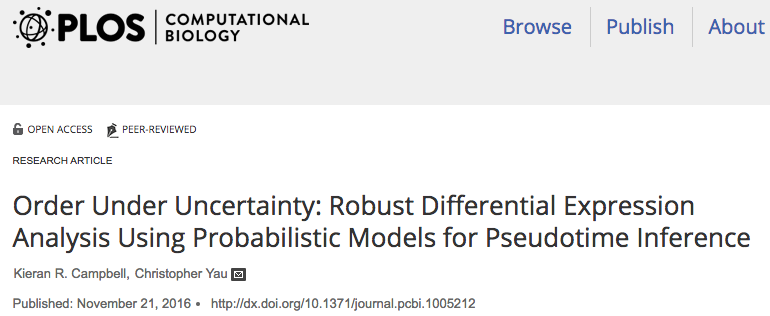
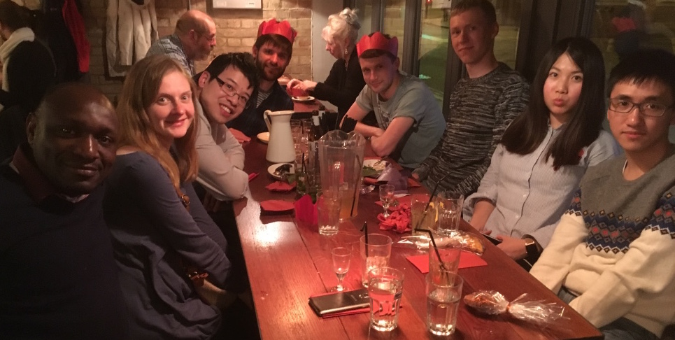

Yau Group
The Yau Group is based at the University of Birmingham and led by Dr Christopher Yau.
About UsRecruitment
Openings for PhD Studentships and Postdoctoral Research Scientists are now available at the University of Birmingham.
Learn More

New Publication
Our paper on pseudotemporal analysis from single cell data has been published in PLOS Computational Biology.
View Papers
